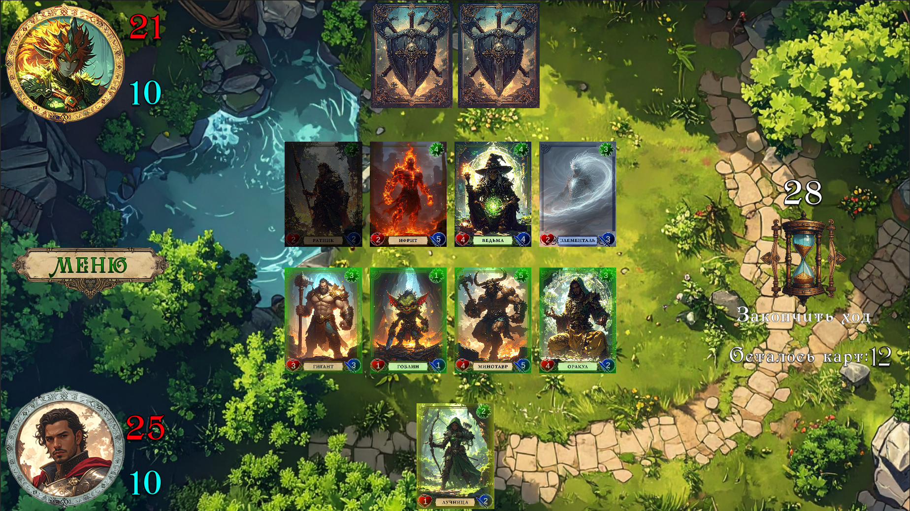
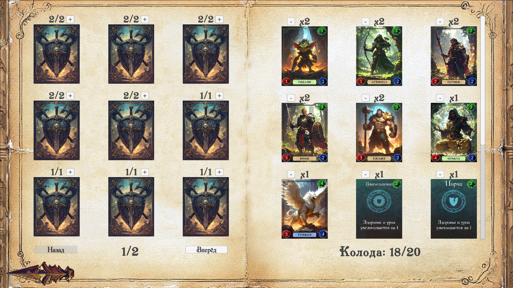
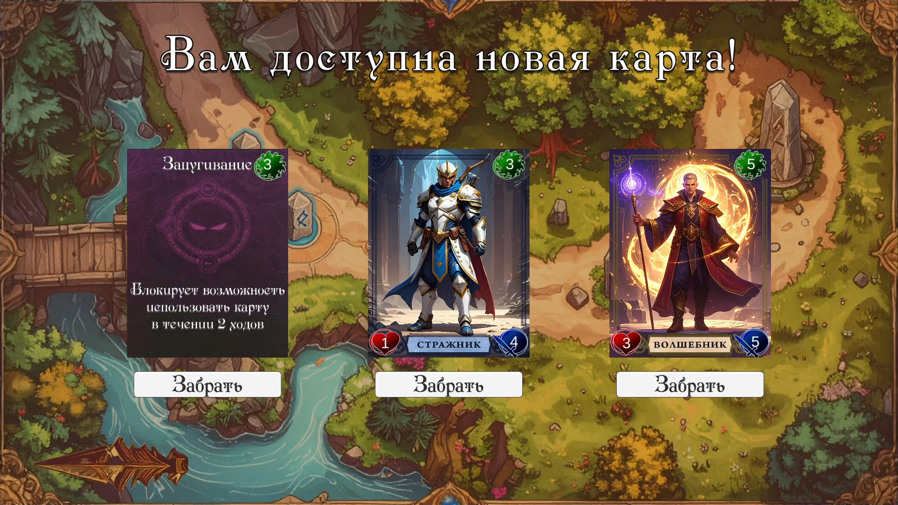
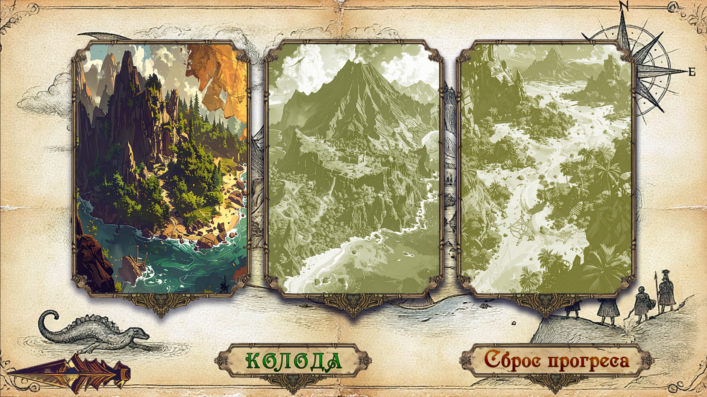

Бой и эффекты карт
Реализовал пошаговую боевую систему, использование маны и эффекты карт как отдельные расширяемые игровые механики.
ЛИЧНЫЙ ПРОЕКТ / БАКАЛАВРСКАЯ РАБОТА
Модульная цифровая коллекционная карточная игра на Unity с пошаговыми боями, маной, эффектами карт, ИИ противника, прогрессией, сборкой колоды, наградами и системой сохранения.
О ПРОЕКТЕ
Я спроектировал и разработал модульную цифровую коллекционную карточную игру на Unity. Проект объединяет пошаговый бой, сборку колоды, прогрессию, ИИ противников и сохранение данных игрока в единый игровой цикл.

КЛЮЧЕВЫЕ СИСТЕМЫ
Реализовал пошаговую боевую систему, использование маны и эффекты карт как отдельные расширяемые игровые механики.
Реализовал поведение ИИ-противников и встроил автоматическое выполнение их ходов в общий цикл боя.

Реализовал интерфейс формирования колоды и выбор карт, связанный с сохранёнными данными игрока.

Реализовал прогрессию, получение новых карт и сохранение данных, связывающие отдельные матчи с долгосрочным развитием игрока.
ТЕХНИЧЕСКАЯ РЕАЛИЗАЦИЯ
Пошаговый игровой цикл связывает розыгрыш карт, расход маны, применение эффектов и обновление состояния поля.
Эффекты карт реализованы как отдельные игровые механики, чтобы новые типы поведения можно было добавлять без переписывания всего боевого цикла.
Ход противника встроен в тот же общий цикл боя: ИИ выбирает доступное действие и передаёт управление обратно игроку после завершения своего хода.
Сборка колоды, получение новых карт, прогрессия и сохранение данных объединяют отдельные бои в постоянное развитие игрока.
ГАЛЕРЕЯ

Дополнительный игровой кадр.
Интерфейс боя и состояние игрового поля.
ССЫЛКИ